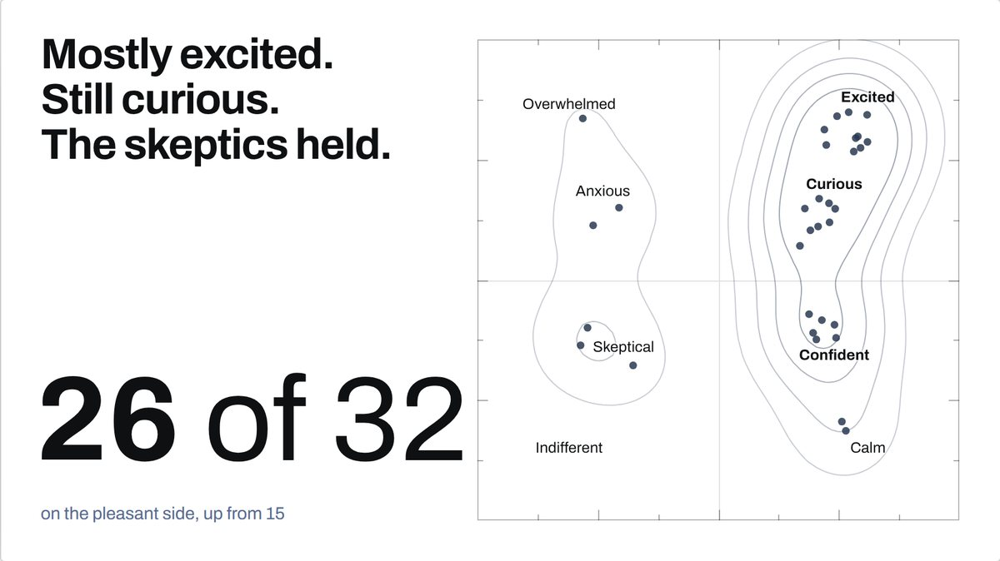
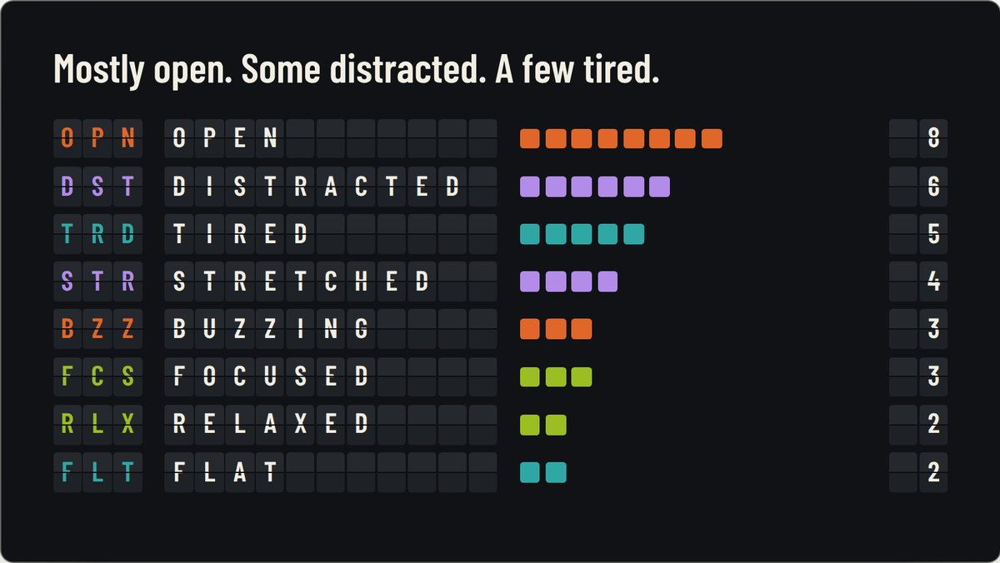
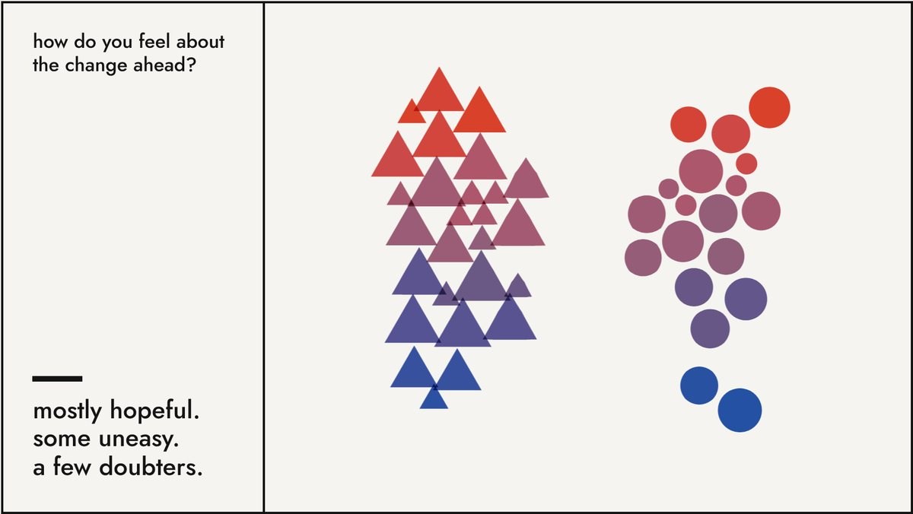
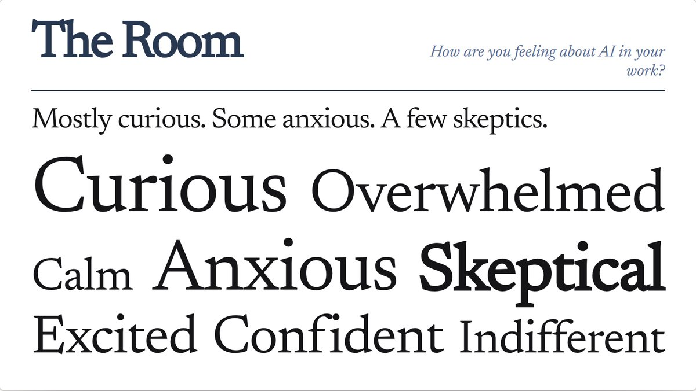
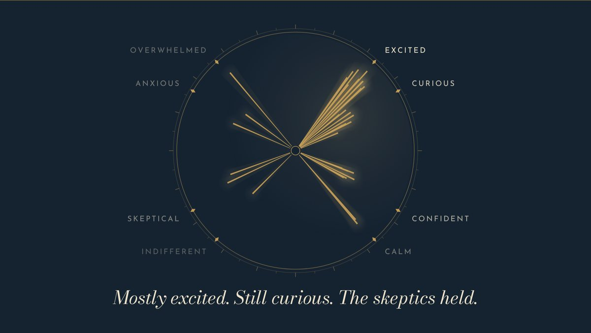

A check-in that bookends a session: how a room arrives, how it leaves, and the moment it sees the difference.
Every frame is live. Tap, drag, and listen.

Everyone places one dot. The room reads as terrain, then watches itself move.

Check in like a trip. A board that flips, a boarding pass, and a route map of the room.

Every feeling has a shape and a note. At the end, you hear the room resolve.

The room writes its own magazine cover. How strongly you feel sets the type.

Turn a dial until it sounds like you. Every ray of the sunburst is a person.